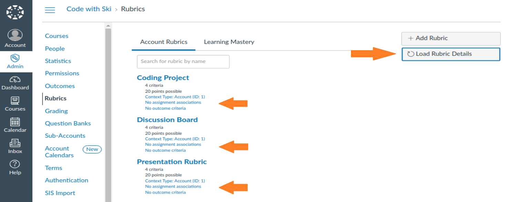
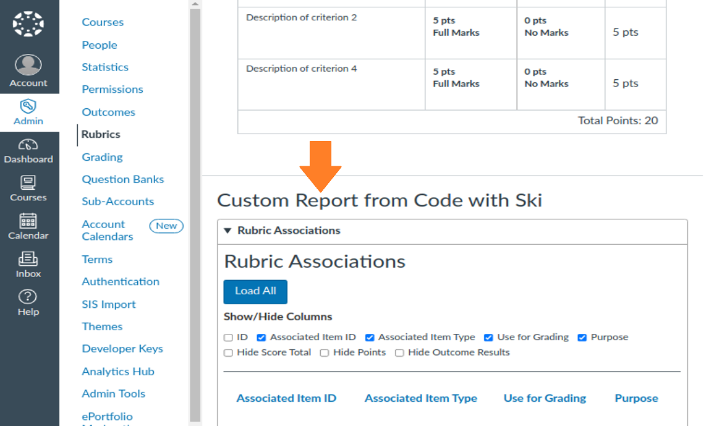

Admin Mods
The following features are mods to areas within a root account/sub-account which are only accessible by Canvas admins.
Global Navigation Admin Menu
The following features are mods that apply to the admin accounts flyout menu on the global navigation menu.
Add quick access admin links
This feature adds some quick access items to the Admin flyout menu. It includes a quick access to the course and people search with account, term, and other search options. It also provides direct links to certain pages in the admin area. The accounts and terms in the select menu are loaded in when opened.
Uses the Canvas LMS REST API to provide this feature.

Course Search
The following features are mods that apply to the course search page.
Add additional search and sort inputs
This adds options to search by published state and to sort by the Canvas course ID. Sorting by the Canvas course ID can help with finding the most recently created courses.

Add the course code to the course search results
Adds the course code below the course name of each course search result.
Uses the Canvas LMS REST API to provide this feature.

Add concluded icon to concluded course names
Adds a locked icon to the beginning of the course name for each concluded course in the search results.
Uses the Canvas LMS REST API to provide this feature.
Add link to People in course
Converts the number of students in each course search result to a link to the People page in the course.
Add a link to the gradebook within a course
Adds a "View Grades" button-styled link below the number of students to each of the course search results. The link will open the gradebook in the corresponding course.
People
The following features are mods that apply to a People page in the admin accounts.
User Account Details
The following features are mods that apply to the details about a user account in the admin accounts.
Add link to "View Grades"
This feature adds a link to view a user's grade on their user details page. The grades page is a quick way to see a summary of a user's current grades in active courses.
Make avatar image resizable
This feature makes the avatar image resizeable. This may be useful if an admin is trying to get a better view of the user's avatar.
Course Enrollments Box
The following features are mods that apply to the Course Enrollments Box on a user's account details page in the admin account.
Set box to be resizable
This makes the box resizable and allows the user to drag the corner to adjust the size.
Set a default height
This allows the user to adjust the default height of this box.
Sort enrollments
This sorts the enrollments by status and then by term. This makes it so that the active enrollments appear first within the box.
Add enrollment filters
It adds filters based on the term, enrollment state, and course state.
Add course code
Adds the course code below the course name for each course enrollment.
Uses the Canvas LMS REST API to provide this feature.
Add Canvas course ID
Adds the Canvas course ID below the course name for each course enrollment. This can help with making API calls.
Accounts Box
The following features are mods that apply to the Accounts Box on a user's account details page in the admin account.
Set box to be resizable
This makes the box resizable and allows the user to drag the corner to adjust the size.
Set a default height
This allows the user to adjust the default height of this box.
Show the admin roles in each account
This adds the admin role(s) that the user has within the account(s).
Uses the Canvas LMS REST API to provide this feature.
Groups Box
The following features are mods that apply to the Groups Box on a user's account details page in the admin account.
Set box to be resizable
This makes the box resizable and allows the user to drag the corner to adjust the size.
Set a default height
This allows the user to adjust the default height of this box.
User Grades
The following features are mods that apply to a user's grades page.
Update name and headings to reflect the user
This feature will update the view to show the appropriate user's information when not looking at your own grades. This helps as a quick summary view for admins, while making the view properly reflect the user.
Uses the Canvas LMS REST API to provide this feature.
Profile Pictures
The following features are mods that apply to the Profile Pictures review area in the admin accounts.
Set images to be resizable
It makes it so the images are resiable by clicking and dragging the corner.
Adjust image shape style
It makes the images appear square rather than circle to see more of the full image.
Change the default image size
This adjusts the default size of images (larger by default) to make it easier to review.
Rubrics
The following features are mods that apply to a Rubrics page in the admin accounts.
Add a search feature
This feature adds a search bar to the rubrics page in accounts. This will make it easier to find rubrics when there is a long list.
This is designed for the classic course rubrics page.
Add a load details button
This feature allows the user to load key details about the rubrics to help with quick audits of the settings. The additional data that is loaded includes the context type, if it has assignment associations, and if it has outcomes criteria.
This is designed for the classic course rubrics page.
Uses the Canvas LMS REST API to provide this feature.
Add drag-and-drop criteria rows feature
This feature allows the user to drag and drop rubric rows when a rubric is in an editing state. If you drag a row up from its current position, it will push the row it is dropped on down. If you drag a row down from its current position, it will push the row it is dropped on up.
This is designed for the classic course rubrics page.
Add import rubric criteria feature
This feature allows a user to import the rubric details when adding/editing a rubric. The user will need to follow the proper format and can use the sample file as a reference point. They will need to enter/paste the data in the import dialog with the column values separated by a tab. When the data is formatted properly it will load the details into the edit rubric preview. This allows the user to review the imported data and how it was added to the rubric before creating the rubric. This also allows the user to add additional criteria and/or import outcomes.
There are two import options:
- Import: This will keep any exisiting criteria in the rubric and add new rows to the end for the new criteria that are imported.
- Import and Replace: This will remove any existing criteria from the rubric and add rows for the new criteria that are imported.
This feature also adds an export criteria button next to the "Import Details" button. This will allow the user to export the current criteria in the edit view to a tab separated values file that is in the proper format for importing data. This is useful if a user has a rubric started already and is looking to add more criteria and wants to organize the rubric order all at once, especially when working with outcomes. It can also be used to allow the user to get the data from one rubric to use as a starting template for a new rubric and/or to 'make a copy'.
This is designed for the classic course rubrics page.
Uses the Canvas LMS REST API to provide this feature.
Add rubric associations report on rubric page
This feature allows the user to load in details about rubric associations. Available data loaded in table includes the following: rubric association ID, associated item ID, associated item type, if it is used for grading, purpose, if it hides score total, if it hides points, and if it hides outcome results.
This is designed for the classic course rubrics page.
Uses the Canvas LMS REST API to provide this feature.
Question Banks
The following features are mods that apply to the Question Banks page in the admin accounts.
Add a search box
This feature adds a search bar to the Question Banks page to make it easier to filter the list question banks.
Sub-accounts
The following features are mods that apply to the Sub-accounts page in the admin accounts.
Show Canvas Account ID
This feature adds the Canvas ID for each sub-account. This helps when needing to look-up the values for API calls.
Show SIS Account ID
This feature adds the SIS ID for each sub-account. This helps when needing to look-up the values for SIS Imports and/or API calls.
Uses the Canvas LMS REST API to provide this feature.
Terms
The following features are mods that apply to the Terms page in the admin accounts.
Show the Canvas Term ID
This feature adds the Canvas term ID to each of the terms. This helps admin if they need the term ID for API calls.
SIS Imports
The following features are mods that apply to the SIS Imports in the admin accounts.
Add SIS History Log
This feature adds a log for past SIS Imports. This allows admin to review past imports. The log can be updated to only show certain workflow states and/or imports that occurred within a certain timeframe. Some of the data included is the SIS import ID, when it started and completed, how long it took to complete, the workflow state, the percentage complete, the number of changes made, the user that performed the import, and the settings used for the import. If there are errors and/or warnings it will include those messages.
Uses the Canvas LMS REST API to provide this feature.